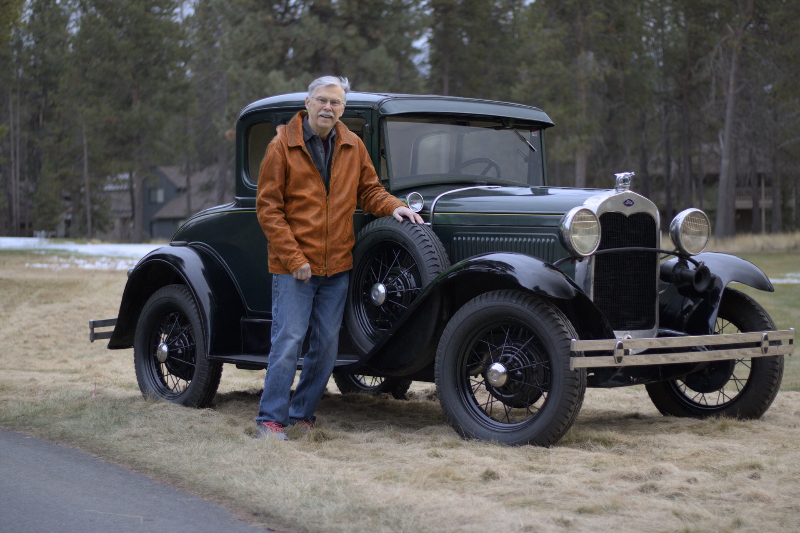
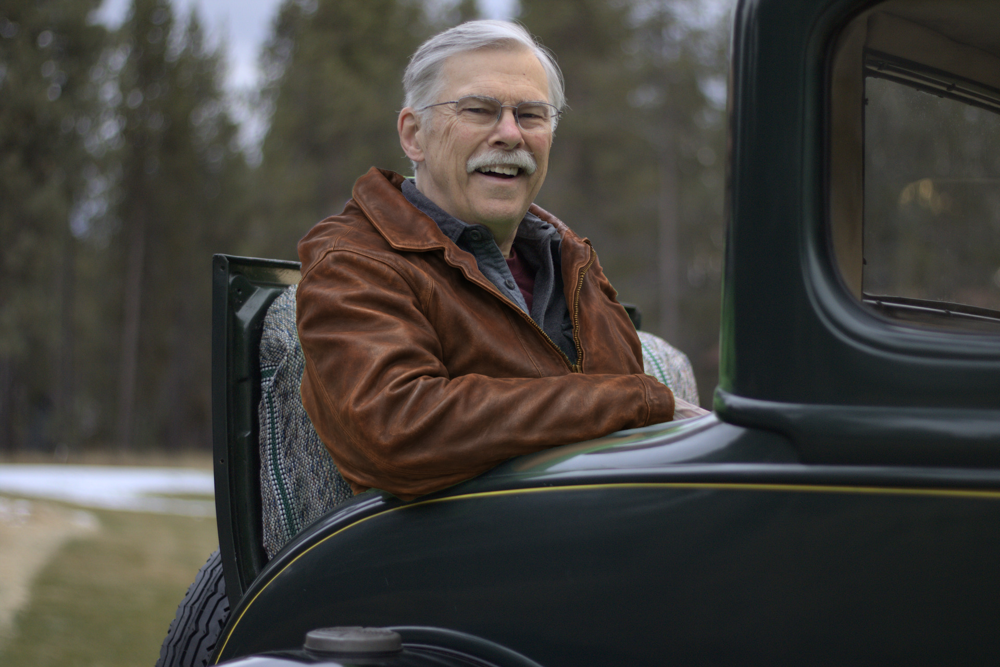
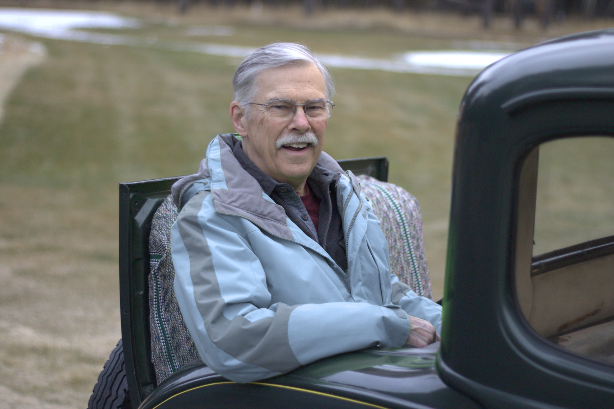

Mechanical
The work included restoring the brakes, fitting a 1954 Ford F-100 steering box and replacing the steering linkage springs. A six-blade cooling fan, fresh fluids and turn signals followed.
Rapp family heritage · Since 1961
1931 Ford Model A — Five-Window Business Coupe

The story · 1961
I purchased the Model A in 1961 when I was 15 years old. (80 now). I was looking for a 1934 Ford Coupe which is a great looking car with a characteristic shape to the radiator and ‘suicide’ doors. After a year of looking and finding only cars that were either too expensive or in poor condition, I found a 1931 Model A 5 window business coupe in a used car lot for $125. I paid for the car but had to have my older brother drive the car off the lot.
The owner, recalling the purchase in November 2026
He remembers red primer, patches that looked sanded for repair, and small 16-inch wheels. There were no mounted spares. By the family’s account, just one person had owned the coupe before him.
1931–2026
Mid-2025–Present
The owner’s son began work around mid-2025. Much of the restoration took place on an October 2026 trip to Sunriver, Oregon.
The work included restoring the brakes, fitting a 1954 Ford F-100 steering box and replacing the steering linkage springs. A six-blade cooling fan, fresh fluids and turn signals followed.
Welded repairs addressed rust. Green single-stage paint covers the body, with Honda Crystal Black on the fenders and running board aprons. The roof was waterproofed and the body striped in yellow. Finishing pieces include a Moto Quail radiator cap, a stainless steel bumper and a hood prop.
Handcrafted door panels pair tan foam-backed upholstery with hand-stitched black leather kick guards. The work also included restoring the rumble seat.
The coupe ran without overheating on the reported October 2026 test drive. Mechanical refinements continue.
1961 & 2026
Contemporary family photographs


There is room here for the family’s recorded interviews, historical photographs, stories and driving videos, along with restoration updates and documents tracing the coupe’s life.